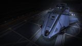

Top speed / boost
214 / 357 m/s
Core Dynamics stripped the Dropship's bulk to produce a fast, nimble armour-tank brawler with two large hardpoints and two military reinforcement slots. It sits just below the premium specialists in raw firepower, but its speed-armour-price balance makes it the natural ship to fight in while grinding toward a Federal Corvette.

This ship's 1–100 suitability rating reflects its fully-engineered fit for this role, scored against every ship in the role. See how ships are rated.
The Federal Assault Ship is what happens when Core Dynamics takes the slow Federal Dropship and tunes it for aggression. The bulk comes off, the engines wake up, and the result is a fast, agile brawler with two large hardpoints, a heavy armour base and two military slots for reinforcement — a Federal medium built to close, hit hard and stay mobile.
It sits in the same conceptual space as the Alliance Chieftain: an agile, affordable, tough combat medium. The FAS trades a couple of the Chieftain's hardpoints for a slightly more aggressive flight profile and Federal flavour, and asks a Federal Navy rank to buy. For commanders grinding Federal standing toward a Corvette, it's the ship they'll happily fight in along the way.
Aggressive conflict-zone and RES combat, pirate massacres, and Federal-rank grinding — anywhere a fast, tough, hard-hitting medium that closes and brawls is wanted.
Four things make the FAS a standout Federal brawler:
Only four hardpoints and shallow optionals cap its firepower and tanking below the premium mediums, and its base shield is low (it's an armour-tank). It also needs a Federal rank to buy. The Alliance Chieftain offers a similar agile-tank profile with more mounts and no rank gate — the FAS's edge is its flight feel and Federal-grind synergy.
Both tables rate ships for the combat role specifically. The role column is the hardpoint loadout — the raw weapon mounts behind the damage.
Same class — medium-pad combat ships
| Ship | Class | Hardpoints | Pros & cons vs Federal Assault Ship | Rating |
|---|---|---|---|---|
| Fer-de-Lance | Medium | 1H 4M | Huge mount; elite agility and alphaFragile internals; pricier; no military slots | 93 |
| Krait Mk II | Medium | 3L 2M | SLF bay; bigger guns; deeper internalsPricier; less aggressive flight feel | 90 |
| Mamba | Medium | 1H 2L 2S | Far faster; bigger alphaPoor agility; pricier | 89 |
| Alliance Chieftain | Medium | 2L 1M 3S | More mounts; no rank gate; three military slotsSlightly less aggressive flight feel | 88 |
| Alliance Challenger | Medium | 1L 3M 3S | Tankier; more mounts; no rank gateSlower; less agile | 86 |
| Corsair | Medium | 3L 3M | Six guns; modern; roomierPricier; no military slots | 85 |
| Federal Assault Ship this | Medium | 2L 2M | — this hull (baseline) | 84 |
| Python | Medium | 3L 2M | Versatile; roomy multi-roleLess agile; lower combat focus | 83 |
| Federal Gunship | Medium | 1L 4M 2S | Seven mounts; tougher; three military slotsFar slower and less agile | 82 |
| Alliance Crusader | Medium | 1L 2M 3S | SLF bay; 3 crew; tankierMuch slower; no rank but lower DPS | 80 |
The FAS is the agile-aggressive pick in the mid-tier combat bracket. The Chieftain matches its profile with more mounts and no rank gate, so for many pilots the Chieftain is the rational choice — but the FAS flies with a sharper, more aggressive feel and pairs perfectly with a Federal-rank grind.
Other classes — the larger leagues
| Ship | Class | Hardpoints | Pros & cons vs Federal Assault Ship | Rating |
|---|---|---|---|---|
| Federal Corvette | Large | 2H 1L 2M 2S | The Federal combat apex — the FAS grind's rewardRear Admiral rank; ~187M Cr; large pad | 98 |
| Imperial Cutter | Large | 1H 2L 4M | Vast shields and firepowerImperial rank; poor agility; large pad | 91 |
| Anaconda | Large | 1H 3L 2M 2S | Eight hardpoints; vast internalsPonderous; costly; large pad | 88 |
| Kestrel Mk II | Small | 3L 2S | Small-pad firepower; agile; no rankLess internal room than the FAS | 85 |
| Vulture | Small | 2L | Small-pad agility; cheap; no rankTwo guns; power-starved; less tank | 80 |
The FAS is a waypoint on the road to the Federal Corvette — the agile medium you fight in while grinding the rank that unlocks the apex large warship. Until then it delivers most of a premium medium's aggression at a fraction of the price.
At ~19.1M Cr the FAS is cheap for its combat capability, but it carries a Federal Navy rank gate — Chief Petty Officer — so you earn the right to buy it. The engineering bill is modest thanks to its shallow internals.
Conveniently, the missions that raise Federal rank (and the combat that pays for them) are exactly what the FAS is good at — so grinding toward a Corvette and fielding the FAS reinforce each other.
The FAS is both a reward for Federal rank and a tool to earn more of it — fly it in Federal-aligned conflict zones and the combat doubles as standing progress.
There is no combat-specific ARX pre-built built around the Federal Assault Ship; buy and outfit it normally once you hold the rank.
An aggressive armour-tank brawler fit using both military slots. Initial is buy-only; A-rated is the combat-ready baseline; Engineered applies the house combat pattern weighted to speed and hull.
| Slot | Initial · buy-only | A-Rated · no eng | Engineered |
|---|---|---|---|
| Hardpoints | |||
| Large 1 | Pulse Laser 3 | Multi-Cannon 3 | MC 3 — Overcharged + Corrosive |
| Large 2 | Multi-Cannon 3 | Multi-Cannon 3 | MC 3 — Overcharged |
| Medium 1 | Pulse Laser 2 | Beam Laser 2 | Beam 2 — Thermal Vent |
| Medium 2 | Multi-Cannon 2 | Multi-Cannon 2 | MC 2 — Overcharged |
| Utility Mounts | |||
| Utility 1 | Shield Booster | Shield Booster | Shield Booster — Heavy Duty |
| Utility 2 | — | Shield Booster | Shield Booster — Heavy Duty |
| Utility 3 | — | Chaff Launcher | Chaff Launcher |
| Utility 4 | — | Heat Sink Launcher | Heat Sink Launcher |
| Core Internals | |||
| Power Plant (6) | E | A | A — Overcharged (G5) |
| Thrusters (5) | E | A | A — Dirty Drive Tuning (G5) |
| FSD (5) | E | A | A — Increased Range (G3) |
| Life Support (5) | E | D | D — Lightweight |
| Power Distributor (6) | E | A | A — Charge Enhanced (G5) |
| Sensors (4) | E | D | D — Lightweight |
| Fuel Tank (4) | C | C | C |
| Military Slots | |||
| Military 1 (4) | Hull Reinforcement | Hull Reinforcement 4 | HRP 4 — Heavy Duty |
| Military 2 (4) | — | Module Reinforcement 4 | Module Reinforcement 4 |
| Optional Internals | |||
| Optional 5 | Shield Generator 5 | Shield Generator 5 (bi-weave) | Bi-Weave 5 — Resistance Augmented |
| Optional 5 | Cargo Rack 5 | Shield Cell Bank 5 | SCB 5 |
| Optional 4 | — | Hull Reinforcement 4 | HRP 4 — Heavy Duty |
| Optional 3 | — | Shield Cell Bank 3 | SCB 3 |
| Optional 2 | — | Module Reinforcement 2 | Module Reinforcement 2 |
| Optional 2 | — | Hull Reinforcement 2 | HRP 2 — Heavy Duty |
| Optional 1 | — | Detailed Surface Scanner | Heat Sink storage |
The FAS's low base shield means it tanks on armour — fill both military slots and the optionals with Heavy-Duty reinforcement, and run a bi-weave shield purely as a regenerating buffer.
Earn the rank, buy the hull (~19.1M Cr), fit a shield and fill the military slots with hull reinforcement.
Arm the two large mounts with gimballed multi-cannons; add a beam on a medium for shield-stripping.
Even unengineered, the speed and armour make it a strong RES and CZ brawler immediately.
A-rating priority for an aggressive armour-tank:
The FAS wins by closing fast, hitting hard and disengaging — A-rate and engineer thrusters before anything else to keep that aggressive edge.
The house combat pattern weighted to speed and hull. Pin blueprints for remote G1→G5 application; visit in person for experimentals.
| Module | Blueprint | Experimental | Engineer |
|---|---|---|---|
| Thrusters | Dirty Drive Tuning (G5) | Drag Drives | Professor Palin / Mel Brandon |
| Power Plant | Overcharged (G5) | Thermal Spread | Hera Tani / Marsha Hicks |
| Multi-Cannons | Overcharged (G5) | Corrosive Shell (one) | Tod McQuinn |
| Beam Laser | Efficient (G5) | Thermal Vent | Broo Tarquin |
| Power Distributor | Charge Enhanced (G5) | Super Conduits | The Dweller |
| Hull Reinforcement | Heavy Duty (G5) | Deep Plating | Selene Jean |
| Bi-Weave Shield | Resistance Augmented (G5) | Fast Charge | Lei Cheung |
| Shield Boosters | Heavy Duty (G5) | Super Capacitors | Didi Vatermann |
Recommended order
Moderate — standard combat G5s plus Heavy-Duty reinforcements. With a complete inventory this is spend, not farm. Ask for exact per-blueprint counts if needed.
Approximate progression across the three states (figures are representative, not exact rolls):
| Stat | Initial | A-rated | Engineered |
|---|---|---|---|
| Top speed (boost) | 357 m/s | 357 m/s | ~440 m/s |
| Agility | excellent | excellent | elite |
| Armour (eff.) | 540 | 540 | ~2,800+ |
| Shield (MJ) | ~190 | ~270 | ~520 |
| Sustained DPS | high | high | high |
Engineering pushes boost past 440 m/s while building effective armour into the thousands — a fast, aggressive brawler that closes in an instant and absorbs the return fire. DPS is solid; speed and toughness are the story.
Any Federal-aligned CZ or Haz RES suits it; favour Federation-controlled systems so combat bonds also raise Federal rank. Around your home region, Federal CZs feed both credits and the Corvette grind.
The Federal Assault Ship is the Federation's agile striker: fast, tough, hard-hitting and cheap, in the spirit of a Federal Fer-de-Lance-lite. It asks a rank to fly, but that rank grind and the FAS's combat strengths feed each other — making it the natural ship to brawl in on the road to a Federal Corvette.
Figures on this page are verified against the sources below.